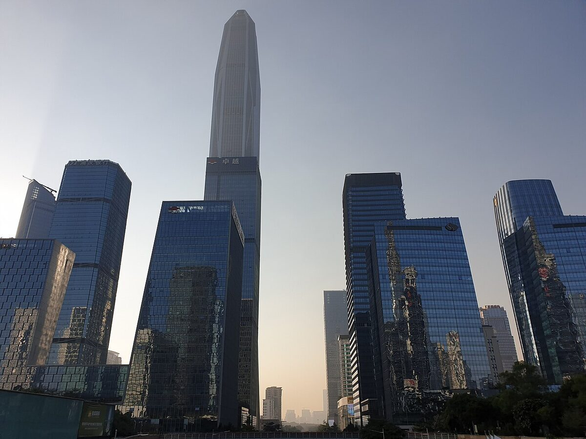
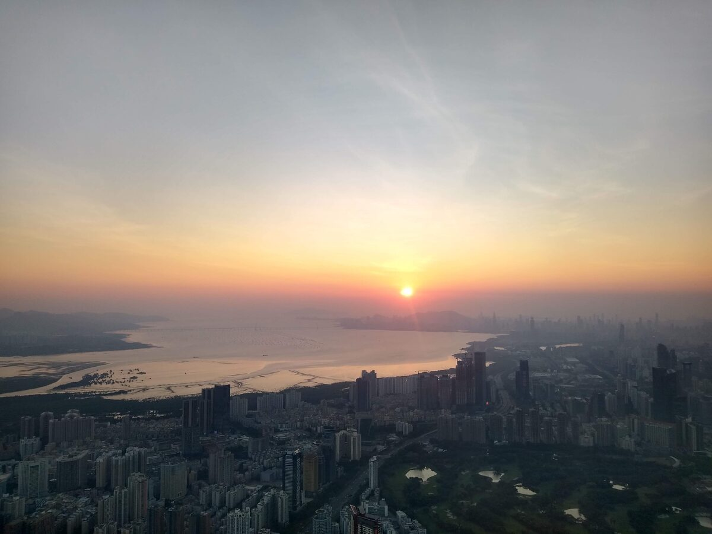
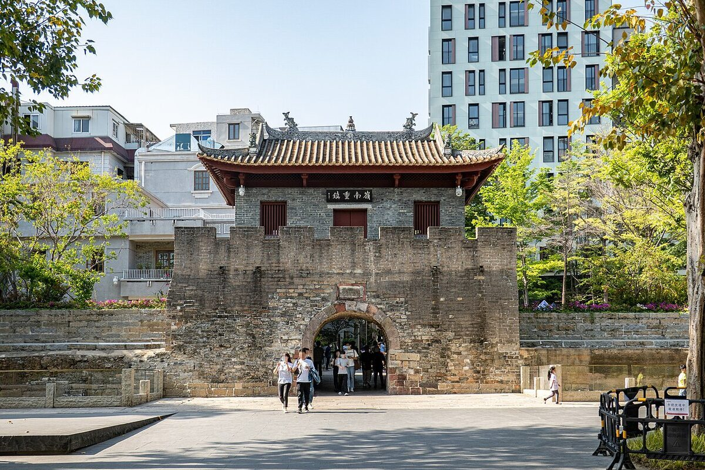

Sweet spot: Start on 3F: go-karts and laser tag before queues build, then 2F (ice rink, PS5/Switch, KTV pods), then 1F arcade as the afternoon fills.
Expect: One wristband, 10:00–22:00, re-entry allowed — leave for lunch and come back. 40+ activities over three levels (5F is a sauna). ¥268 weekday / ¥298 weekend; night pass ¥168 after 19:00.
Look out: Karts and laser tag need closed shoes; skates are rented. Weekday afternoons are quietest. Join their WeChat group at the desk for 20 free claw-machine coins.
Carry a black plastic bag. It's the trade signal of a 拿货 buyer — prices change before you speak.
Ask “拿货几多？” (stock price), not “多少钱？” (retail).
Ask “几件起？” — minimum pieces. Two or three is normal at 白马.
Counter at half, settle at 55–65%. Start walking if they won't move.
From 16:00 they bargain hardest — the last two hours before closing. Most buildings shut 18:00–19:00.
Bigger deals: ask for the 天虹 (Tianhong) clearance building — where the volume buyers work. Ask a stallholder to point you there.
Pay by WeChat/Alipay; count goods before paying.
Cosmetics: check batch code + expiry. Jewellery: price = gold weight × rate + 工费, ask for the certificate. Clothing: sizes run small. Electronics: know the online price first.
Getting there & back
Leg
Route
Time
Cost
In
东涌 → 九龙 (Tung Chung Line) → walk to 西九龙 → HSR to 福田 → DiDi
1 h 50 – 2 h 15
≈HK$110
Out
Hotel → 福田口岸 (1.1 km) → 落马洲 → East Rail → 红磡 → 南昌 → 东涌
~2 h 15
HK$57.5
Port hours 06:30–22:30 · last East Rail from 落马洲 ≈ 22:55 · be at the port by 18:00–18:30 on the 27th.
Driverless cars 无人驾驶出租车
Pony.ai (小马智行) is the one to try — citywide permit, zone over 南山 / 前海 / 深圳湾, ~10,000 pickup points, 07:00–22:00. Book in the PonyPilot+ app or its WeChat mini-program. It's the operator that accepts passports and foreign cards.
Apollo Go (萝卜快跑) also runs in 南山 / 宝安 / 坪山 (07:00–23:00) but is station-to-station — you walk to a green pickup dot, not an address.
Register in PonyPilot+ with your phone and passport — ~10 minutes.
Set pickup + drop-off inside the green zone.
Wait 3–15 min; match the plate and car number.
Unlock from the app (Bluetooth) or type your phone's last 4 digits on the door.
Back seat only, belt up, tap Start on the screen.
Cost: ¥10–30 for 3–6 km. The catch: both apps may demand a +86 number for SMS — if yours fails, try the WeChat mini-program, or ask the front desk to book on their account. Weather suspends service.
Ride to take: 万象天地 → 深圳湾科技生态园, 3.5 km, ~12 min, ¥15–25 — inside the zone and lands you at the tech park.
All the places

Ping An International Finance Centre (平安金融中心), Futian CBD

From the 116F deck at sunset
Ping'an International Financial Center 平安金融中心
Fun 8/10Futian · 1.36 km ·
DiDi 8 min · 3.0 km · ¥13–17
Getting there: L4 Futian Checkpoint → Convention & Exhibition Center → L1 Shopping Park (3 stops) · 16 min
Sweet spot: 116F, the west/southwest corner windows about 30 min before sunset — you look straight down 益田路 and across to 莲花山公园. Do daylight → sunset → lights on one ¥180 ticket.
Expect: Airport-style security (bag scan), a 55-second lift, then an open 360° deck. 45–60 min inside. Buy online (¥180) instead of ¥200 at the counter.
Look out: Last entry 19:15, 20:15 on Fri/Sat. Haze after a humid day ruins the view — check the visibility before paying. No tripods.
DiDi destination (copy) — Ping'an International Financial Center平安金融中心
Manman Wellness SPA 慢慢生活馆·中泰式按摩·SPA（会展中心店）
Fun 7/10Futian · 1.45 km ·
DiDi 10 min · 2.8 km · ¥13–17
Getting there: L4 Futian Checkpoint → Convention & Exhibition Center (2 stops) + exit E · 15 min
Sweet spot: A 21:00–22:30 slot — the city is lit, your feet are done, and it's 10 min from the hotel.
Expect: 金中环商务大厦 A座 21F, room 2109 (会展中心站 E). Chinese/Thai massage, oil and hot-stone; 60–90 min treatments, ¥200–400. Open 10:30–23:30, last slots ~21:30.
Look out:Book ahead on Klook, Trip.com or Ctrip — 21:00 walk-ins often wait. Say if you don't want oil. Showers and lockers are on site; bring your own underwear or use theirs.
Museum of Contemporary Art & Planning Exhibition (当代艺术与城市规划馆)
Museum of Contemporary Art & Planning Exhibition 深圳当代艺术与城市规划馆
Fun 7/10Futian · 2.59 km ·
DiDi 12 min · 3.5 km · ¥15–19
Getting there: L4 Futian Checkpoint → Civic Center (3 stops) + 340 m walk · 18 min
Sweet spot: The ground-floor atrium and the giant city-model hall (north wing, floors 3–5). The brushed-aluminium skin looks best in mid-afternoon light.
Expect: Free, no booking, Tue–Sun 10:00–18:00. Security x-ray at the door, 1–1.5 h inside. English captions are patchy; the model is the highlight.
Look out: Closed Mondays. Some touring exhibitions charge separately. No food or drink inside; free lockers at the entrance.
Sweet spot: The loft lanes and coffee terraces, then the footbridge into 莲花山公园 — a 15–20 min climb to the Deng Xiaoping statue for the classic CBD skyline at sunset, free.
Expect: An open-air mall (MUJI Hotel/Diner, duty-free, design shops) plus a big park. 2–3 h if you do both. This is the best free sunset in the city.
Look out: The bridge and park climb are unshaded — go after 16:00. Few toilets near the summit. The mall is quiet on weekday mornings.
Fun 7/10Futian · 6.88 km ·
DiDi 14 min · 10.0 km · ¥30–39
Getting there: L9 from Futian, direct · 25 min
Sweet spot: The promenade at the Shenzhen Bay Park metro exit, walking west: Hong Kong's hills across the water, the Houhai towers behind. 30 min before sunset.
Expect: Free, flat, 15 km of path. Bikes to rent, no shade in the middle of the day.
Look out: It's a long walk — pick a direction and commit, or rent a bike. Weekends are packed with cyclists.
DiDi destination (copy) — MixC World 万象天地 (Nanshan)万象天地
Shenzhen Bay Tech Park 深圳湾科技生态园
Fun 6/10Nanshan · 11.09 km ·
DiDi 22 min · 16.0 km · ¥45–58
Getting there: L13 人才公园, or L2/L11/L13 后海 · 45 min
Sweet spot: Walk the deck behind 万象天地 toward 人才公园 — glass towers on one side, open water and the Houhai skyline on the other. Best light after 16:00.
Expect: An office campus, not an attraction — 45 min on foot, free, and the natural end point of a robotaxi ride. Tencent's Binhai towers are 1 km east.
Look out: Weekday lunchtime is a wall of office workers; weekends are dead. No sights as such — go for the walk and the ride, not for a 'tech museum'.
DiDi destination (copy) — Shenzhen Poly Cultural Plaza深圳保利文化广场

South gate of Nantou Ancient City (南头古城)
Nantou Ancient City 南头古城
Fun 5/10Nanshan · 14.49 km ·
DiDi 24 min · 21.7 km · ¥58–76
Getting there: L7 Huanggangcun → Chegongmiao → L1 Taoyuan → L12 Nantou Ancient City (2 changes) · 55 min
Sweet spot: The south gate and main lane, plus coffee in the restored courtyard houses.
Expect: 1.5–2 h at most — and only if you want a coffee stop.
Look out: If you go anyway, go for coffee in a restored courtyard, not for sightseeing, and only on a weekday — weekends are packed and the shops repeat.